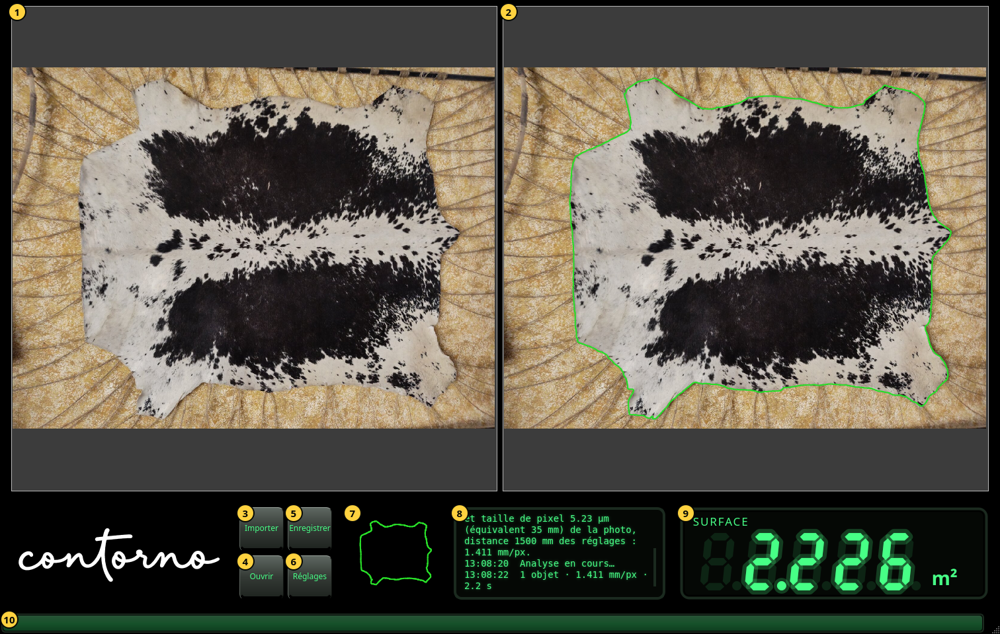
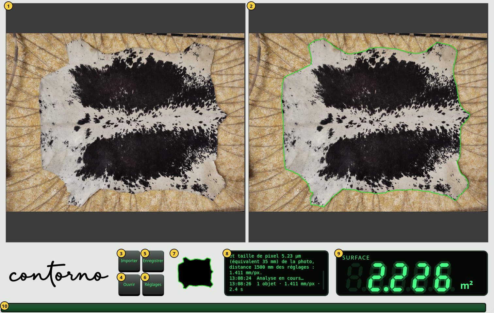

Premiers pas
La fenêtre, ses parties, le zoom et le thème clair.
Ouvrez Contorno Indicator. La fenêtre occupe tout l'écran. Avant la première photo, l'afficheur montre des tirets et le panneau de messages indique Importez une photo des objets posés sur la table.


- La photo telle qu'elle a été prise, intacte.
- La même photo avec le contour trouvé, en vert. C'est à l'intérieur de ce contour que la surface est mesurée.
- Importer — choisir une photo de l'objet sur la table. Son analyse commence aussitôt.
- Ouvrir — revoir une inspection enregistrée. Voir Enregistrer et ouvrir des inspections.
- Sauver — garder la photo, la caméra, le contour et la surface dans un seul fichier zip.
- Réglages — la caméra, la langue et le thème. Voir Réglages.
- Le masque : l'objet tel que l'analyse le voit, en noir, avec son contour en vert.
- Le panneau de messages. Chaque ligne commence par son heure. Il dit ce qui a été importé, d'où vient l'échelle, combien d'objets ont été trouvés et combien de temps cela a pris.
- L'afficheur : la surface à l'intérieur du contour.
- La barre d'activité. Elle avance pendant l'analyse de la photo et reste pleine une seconde quand le résultat arrive.
Zoomer et défiler
Tournez la molette de la souris au-dessus d'une photo pour zoomer ou dézoomer à l'endroit du pointeur. Faites glisser pour défiler. Les deux photos zooment et défilent ensemble : le contour de droite reste toujours au-dessus du même endroit que la photo de gauche. Une nouvelle photo est de nouveau montrée entière.
L'afficheur
L'afficheur donne la surface en cm² en dessous de 0.1 m² (une décimale, par exemple 125.4 cm²) et en m² à partir de 0.1 m² (trois décimales, par exemple 2.226 m²). Quand une nouvelle valeur arrive, les chiffres défilent depuis la précédente. Les nombres s'écrivent avec un point, comme dans le programme.
- Tirets : pas encore de photo, ou l'analyse a échoué. Le panneau de messages dit pourquoi.
- Chiffres atténués : la valeur de la photo précédente pendant l'analyse de la nouvelle. Un nombre atténué n'est jamais le résultat actuel.
- Chiffres vifs : la surface à l'intérieur du contour montré à droite.
Le thème clair
La fenêtre est noire par défaut. La touche du thème dans Réglages rend les panneaux gris clair avec un logotype noir ; les photos ne changent pas.

